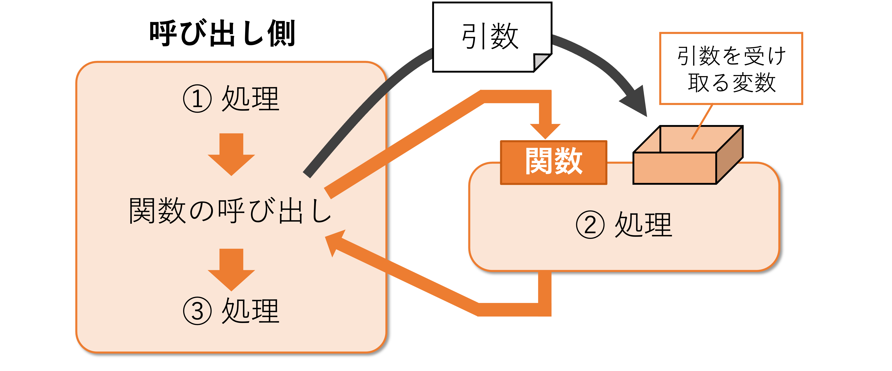

関数（講義）#
担当：古居彬
内容#
関数とスコープでは，ひとまとまりの命令文に対して名前をつけ，関数として管理する仕組みについて学ぶ． ひとまとまりの処理を関数にすることで，プログラムコードの管理を効率化するとともに，全体の見通しをよくすることができる． 関数を使う際には，変数の有効範囲（スコープ）に注意する必要がある． 関数とスコープの概念を理解するため，具体的には以下の内容について学ぶ．
関数の定義と呼び出し方法を理解する
関数における引数と返り値について学ぶ
複数の引数および返り値を設定する方法を学ぶ
ローカルスコープ，グローバルスコープの違いと，実用上の注意点について学ぶ
関数とは#
関数（function） とは，入力を入れると，何らかの出力が出てくる変換装置のようなものである． 数学で，一次関数や二次関数を学んだかと思うが，プログラミングにおける関数もこれら数学の関数と本質的には同じものである．
数学の関数として，例えば \(y = 2x + 1\) のような一次関数を考えよう． \(x\) に何かしらの値を与えると， \(2x + 1\) の計算結果が \(y\) として得られる． このように数学の関数は，「数値を与えたら，計算が行われ，その結果が得られる」というものである（数学的に厳密な定義はここでは考えないとする）．
一方，プログラミングの関数は，「何か数値や文字列などを与えたら，計算などの処理が行われ，その結果が得られる」というものである． 数学の関数は数値だけであったが，Pythonの関数は文字列など数値以外も与えられる． また，関数の中での処理も，単なる計算だけではなく，さまざまな処理が行われる．
このようにプログラミングの関数の方が機能が広いわけであるが，「何かしらの値を与えたら，計算などの処理が行われ，その結果が得られる」という点では，数学の関数と本質は同じである．
プログラミングにおける関数は，よく使う処理をまとめておきたい場合などによく利用される． 入力に対して出力をどう決めるか，という処理内容をプログラムの処理として自由自在に書くことができる．
関数には，Pythonにはじめから準備されている 組み込み関数 と，自分で作成する ユーザ定義関数 がある．
例えばこれまで用いてきた print 関数や type 関数，range 関数などは組み込み関数である．
今回は，主にユーザ定義関数の利用方法について学んでいく．
Pythonでユーザ定義関数を利用する場合，まず関数を 定義 した後，使いたい場所で 呼び出し する必要がある． 一度定義した関数は，コード内で再利用することができる．
関数の定義#
まず，関数の定義をしてみよう．
関数を定義するためには， def を使う．
例えば，Hello! を表示する関数 greeting を定義する際には，次のように記述すれば良い．
def greeting():
print('Hello!')
定義した関数は，後から何度でも呼び出すことができる．先ほど作成した greeting 関数を呼び出すには，以下のように記述すればよい．Hello!という出力が表示されるはずだ．
greeting()
Hello!
関数の定義の一般形は以下の通りである．
def 関数名(引数):
処理内容
一行目は 関数ヘッダ（または 関数シグネチャ）と呼ばれ，関数名 と 引数（仮引数）を指定する（引数については後述）．
上記の greeting 関数のように渡す変数がなければ引数は指定しなくてもよい．
関数を呼び出す際に実際に渡される値は 実引数 と呼ばれ，関数定義で受け取る変数は 仮引数（または パラメータ）と呼ばれる．
❗ 重要なポイント
関数定義の右側にある「コロン（:）」を忘れないように注意する．
関数の処理内容は インデント（字下げ）した上で コードブロック として記述する．
ユーザ定義関数の名前として，既に存在する組み込み関数の名前（
listなど）は使わないこと．
前述の通り，関数を一度定義しておけば，単に「関数名()」と記述するだけでその関数をいつでも呼び出すことができる．
関数の呼び出しを含む処理の流れは以下の通りである．
上図に対応して，以下のようなプログラムを考えてみよう． ①, ②, ③それぞれの処理がどのようなタイミングで実行されるかに注意．
def sample_function(): # 関数の定義
print('sample_function の内部の命令文です．') # ② 関数の中の処理
print('これから sample_function を呼び出します．') # ① 実際の処理はここからはじまる
sample_function() # 関数の呼び出し
print('sample_function の呼び出しが終わりました．') # ③
これから sample_function を呼び出します．
sample_function の内部の命令文です．
sample_function の呼び出しが終わりました．
💡 関数の定義のまとめ
関数を用いることで，処理のまとまりに名前をつけて管理できる．
一度定義した関数は，何度でも呼び出すことができる．
引数#
引数（ひきすう）とは，関数へ引き渡される値のことである．簡単に言うと，関数への 入力 のことである． 数学の関数 \(y = 2x + 1\) における \(x\) に相当する．
引数に与える値を変えると，実行結果も変わる．
例えば print 関数であれば，引数に与える文字列を変えれば，表示される内容も変わる．
「表示する」という print 関数の機能自体は同じだが，引数によって表示内容を変えられるわけである．
関数に引数を指定する流れを以下の図に示す．

関数の方に，引数を受け取るための変数（これを仮引数と呼ぶ）を準備しておくことで，関数を呼び出す側から具体的な値を渡すことができる．
引数を指定するには，関数ヘッダの括弧 ( ) の中に渡したい変数の一覧を記述すれば良い．
例えば，先ほどの greeting 関数を改良して，仮引数 name に指定した人名も併せて表示するようにしてみよう．
# 引数nameをもつ関数greeting
def greeting(name):
print(f'Hello, {name}!')
関数を呼び出す際，引数に具体的な値を指定することで，関数は受け取った値を処理することができる．
例えば，引数 name に 'John' を指定すると，以下のようになる．
greeting('John')
Hello, John!
当然，指定する値によって異なる処理結果となる．
greeting('Mike')
Hello, Mike!
また，値そのものではなく，値が格納された変数を引数に指定することも可能である．
person_name = 'Jack'
greeting(person_name)
Hello, Jack!
複数の引数#
関数には，任意の数の引数を指定することができる． その場合，各引数をコンマで区切って記述する必要がある．
def 関数名(引数1, 引数2, 引数3, ...):
処理内容
先ほどの greeting 関数を，複数の人の名前を指定できるように書き換えてみよう．
# 引数nameをもつ関数greeting
def greeting(name1, name2):
print(f'Hello, {name1} and {name2}!')
関数を呼び出す際に，それぞれの引数に値を指定すればOK．
greeting('Jack', 'Taro')
# 実践例：割引価格計算
def calculate_discount_price(original_price, discount_rate, tax_rate):
"""元の価格，割引率，税率から最終価格を計算する関数"""
discounted_price = original_price * (1 - discount_rate)
final_price = discounted_price * (1 + tax_rate)
print(f'元の価格: {original_price}円')
print(f'割引後: {discounted_price}円')
print(f'税込み最終価格: {final_price}円')
print('\n--- 実践例：価格計算 ---')
calculate_discount_price(1000, 0.2, 0.1) # 1000円，20%割引，10%税
Hello, Jack and Taro!
--- 実践例：価格計算 ---
元の価格: 1000円
割引後: 800.0円
税込み最終価格: 880.0000000000001円
⚠️ 注意
複数の引数を指定する場合，引数名が重複しないようにする．
少し実践的な例を考えてみよう．
体重と身長を引数に指定して，BMIを計算する関数 calculate_bmi を定義してみよう．
# 体重(kg)と身長(m)からBMIを計算して表示する関数
def calculate_bmi(weight, height):
bmi = weight / (height ** 2)
print(f'体重{weight}kg, 身長{height}mの場合，BMIは{bmi}です')
print('\n--- 実践例：BMI計算 ---')
calculate_bmi(70, 1.75)
calculate_bmi(60, 1.60)
--- 実践例：BMI計算 ---
体重70kg, 身長1.75mの場合，BMIは22.857142857142858です
体重60kg, 身長1.6mの場合，BMIは23.437499999999996です
キーワード引数#
複数の引数を持つ関数の場合，事前に定義した引数の順番（位置）に従って関数に引数を渡す必要がある．
キーワード引数 を用いると，関数に引数の変数名とその値のセットを渡すことができる．これにより，定義時の順番に縛られることなく引数を指定できる．
例えば，次のように あいさつの言葉（word）と，敬称（title），人名（name）を引数として持つ関数 greeting を考える．
def greeting(word, title, name):
print(f'{word}, {title} {name}!')
それぞれの引数に値を指定することで，以下のような出力を得ることができる．
greeting('Hello', 'Mr.', 'Brown')
Hello, Mr. Brown!
ここで，単純に引数に指定する値の順番を入れ替えると，以下のようになる．
greeting('Brown', 'Hello', 'Mr.')
Brown, Hello Mr.!
これは，事前に定義した引数の順番に応じて値が指定されるためである．
上記の例だと，word に 'Brown'， title に 'Hello'， name に 'Mr.' が指定されてしまうため，意図しない出力が得られてしまった．
これに対し，以下のように引数の変数名とその値のセットを渡すことで，順不同で引数を関数に渡すことができる．
greeting(name='Brown', title='Mr.', word='Hello')
Hello, Mr. Brown!
greeting(word='Hello', name='Brown', title='Mr.')
Hello, Mr. Brown!
⚠️ 注意：通常の引数とキーワード引数が混在する場合
キーワード引数と通常の引数の両方を混在させて関数を呼び出すことも可能だが，その際には指定する順番に注意が必要だ． 原則として，最初に通常の引数を指定し，その後でキーワード引数を指定する必要がある．
つまり，
greeting('Hello', title='Mr.', name='Brown')のように書くことは可能だが，
greeting(word='Hello', title='Mr.', 'Brown')のように書くとエラーとなる．
デフォルト引数#
通常，関数において引数に値を渡さないとエラーが表示される．
例えば，先ほどの greeting 関数において，本来3つの引数が必要なのに対して2つの引数しか指定しないと，以下のようなエラーが出る．
greeting('Mr.', 'Brown')
---------------------------------------------------------------------------
TypeError Traceback (most recent call last)
Cell In[16], line 1
----> 1 greeting('Mr.', 'Brown')
TypeError: greeting() missing 1 required positional argument: 'name'
これに対し，関数を呼び出す際に引数に値を渡さなかったとしても，あらかじめ指定された値を使用するように設定できる． このような引数は デフォルト引数 と呼ばれ，関数を定義（宣言）する際にその引数に何かしら値を設定しておけばよい．
先ほどの greeting 関数において，引数 word をデフォルト引数として定義すると，以下のようになる．
def greeting(title, name, word='Hello'):
print(f'{word}, {title} {name}!')
⚠️ 注意
デフォルト引数を持つ関数を定義する際は，デフォルト引数を通常の引数よりも後ろに書く必要がある．
つまり，
def greeting(word='Hello', title, name): ...のように書くことはできないことに注意しよう．
上記のように書くことで，word の値が引数で渡されなかったときに，あらかじめ設定された 'Hello' が word の値として利用される．
greeting('Mr', 'Brown')
もちろん，これまでの関数と同様，word に引数で別の値を指定すればそれに応じた結果となる．
greeting('Mr', 'Brown', 'Hi')
前回登場した range 関数において，引数 start と step は省略できることを説明したが，これはまさにこれらの引数がデフォルト引数として定義されているからである．
💡 引数のまとめ
引数とは，関数に渡す値のことである．
カンマで区切ることで，複数の引数を設定することができる．
キーワード引数を用いることで，順不同で関数に値を渡すことができる．
デフォルト引数を設定することで，関数を呼び出すときに，値が指定されなかった場合でもあらかじめ設定した値を用いて処理を実行できる．
戻り値#
関数を実行した後，何かしらの値を返すことができる． このような値のことを，戻り値（または 返り値）と呼ぶ． 数学の関数 \(y = 2x + 1\) における \(y\) に相当する．
以下の図は，関数から戻り値を受け取るイメージを表したものである．
呼び出し側は，関数からの戻り値を受け取ることによって，計算を行った結果などを知ることができる．
戻り値は，return で指定する．
例えば，引数として与えられた値を10倍する関数 ten_times を考えよう．
def ten_times(a):
return a * 10
ten_times(3)
引数として与えられた 3 が関数内で10倍され，結果が return によって返されていることがわかる．
関数の戻り値を，変数に代入することもできる．
result = ten_times(3)
print(result)
引数に指定する数字を変更すると，戻り値の値も変化することを確認してみよう．
result = ten_times(9)
print(result)
複数の戻り値#
引数と同様に，戻り値も複数設定することができる．
複数の戻り値を設定したい場合は，return 文の後にカンマで区切って複数の値を記述する．
例えば，2つの数値の和と差を同時に計算する関数を考えてみよう．
def plus_minus(a, b):
plus_result = a + b
minus_result = a - b
return plus_result, minus_result
このとき，内部的にはタプルとして値が返されている．
💡 タプルの復習（変数とデータ型）
タプルとは，複数の要素から構成されるデータ構造である．
括弧を使って
(123, 45, 678)のように書いても良いし，括弧を省略し123, 45, 678としても良い．
この戻されたタプルを受け取るためには，以下のように変数を複数指定することができる．
# 複数の戻り値を受け取る（アンパック）
plus_value, minus_value = plus_minus(8, 3)
print(f'和: {plus_value}')
print(f'差: {minus_value}')
また，タプルとして受け取ることも可能である．
# タプルとして受け取ることも可能
result_tuple = plus_minus(8, 3)
print(f'結果（タプル）: {result_tuple}')
print(f'和: {result_tuple[0]}, 差: {result_tuple[1]}')
実践的な例を考えてみよう．以下は，引数として受け取った試験の点数から，成績（A, B, C, D）と合否（合格, 不合格）を返す関数である．
# 成績判定の実践例
def evaluate_score(score):
"""点数から成績と合否を判定する関数"""
if score >= 90:
grade = 'A'
pass_fail = '合格'
elif score >= 80:
grade = 'B'
pass_fail = '合格'
elif score >= 70:
grade = 'C'
pass_fail = '合格'
else:
grade = 'D'
pass_fail = '不合格'
return grade, pass_fail
print('\n--- 実践例：成績判定 ---')
grade, result = evaluate_score(85)
print(f'85点: {grade}評価, {result}')
return文の実行タイミング#
return 文が実行されると，その時点で関数の実行が終了し，呼び出し元に戻り値が返される．
つまり，return 文以降の処理は実行されない．
def check_number(x):
if x > 0:
return "正の数"
print("この行は x > 0 のときは実行されない")
return "0以下の数"
print(check_number(5)) # 引数を変えて確認してみよう
return 文を記述しない場合，関数は自動的に None を返す．
def greet():
print("Hello!")
# return文なし
result = greet()
print(f"戻り値: {result}") # None が出力される
💡 戻り値のまとめ
関数内で
return文を用いることで，戻り値を設定することができる．
return文が実行されると，その時点で関数の実行が終了する．
return文を省略した場合，自動的にNoneが返される．複数の値を戻り値に設定したい場合は，カンマで区切って記述する（内部的にはタプルとして扱われる）．
スコープ#
関数の引数や関数内で宣言された変数の有効範囲は，その関数内に制限される．つまり，それらの変数は関数の外からは参照することができない． このような変数の有効範囲のことを，スコープ（scope） と呼ぶ．
例として，以下のような関数を考えてみよう．
def show_number():
x = 100
print(x)
関数 show_number() 内で変数 x に100を代入し，その値を表示するような関数である．
実際に呼び出して実行してみよう．
show_number()
上記の通り，確かに x に100が入っていることがわかるはずだ．
では，この x を表示してみよう．
print(x)
上記の通り， NameError: name 'x' is not defined，つまり「変数 x が定義されていない」というエラーが表示される．
このように，関数の中で定義された変数は ローカル変数 と呼ばれ，その関数内でしか参照できない（なので関数の外では「定義されていない」ことになる）．
また，関数の引数も同様にローカル変数となるため，やはり関数の外からは参照できない．
def show_number(x):
print(x)
print(x)
これに対し，関数の外で宣言された変数は関数の中でも参照することができる．
x = 100 # グローバル変数としてxを定義
def show_number():
print(x)
show_number() # 関数内でxを参照
print(x) # 関数外でxを参照
関数内で x を参照した場合でも，関数外で x を参照した場合でも，正しく100が表示されていることがわかる．
このように，関数の外で定義された変数は グローバル変数 と呼ばれる．
ローカル変数が参照可能な範囲を ローカルスコープ，グローバル変数が参照可能な範囲を グローバルスコープ と呼ぶ． ここで注意すべきポイントは，
ローカルスコープからグローバルスコープは見える
グローバルスコープからローカルスコープは見えない
ということである．
特に，グローバル変数と同名のローカル変数を使用する場合などは注意が必要である．以下のコードを考えてみよう．
x = 300
def show_number():
x = 150
print(x)
流れとしては，グローバル変数 x に300を代入した後，内部で変数 x に150を代入して表示する関数 show_number を実行している．
この関数を実行すると，グローバル変数 x に150が代入されると期待するかもしれないが，実際にはそうはならない．
show_number()
print(x)
このように，関数 show_number を実行しても，グローバル変数の値は変更されない．
これは，関数内における x はローカル変数として機能しているためである．
このようにローカルとグローバルで同名の変数を定義することはバグの元となってしまうため，推奨されない． 名前の衝突が起きないように注意しよう．
❗ セルとスコープ
Google ColabおよびJupyter Notebookでは，セルという単位でプログラムを作成するが，この場合のスコープはどうなるだろうか？
これまでの教材を動かしていればわかると思うが，同じノートブック内の全てのセルに対してグローバルスコープが設定される． つまり，セルが分かれていても，関数の外で変数を定義したら，その変数は他のセルから参照できることになる（ただし，あらかじめ変数を定義するセルが実行されている必要がある）．
💡 スコープのまとめ
関数の引数や関数内で宣言された変数はローカル変数と呼ばれ，その関数内でのみ使用できる．
一方，関数の外で定義された変数はグローバル変数と呼ばれ，プログラム全体で参照できる．
ローカル変数とグローバル変数で名前が重複しないように注意する．
【発展】何もしない関数#
通常，Pythonでは中身を省略した関数を定義することができず，必ず処理内容を記載する必要がある． しかし，大規模なプログラムを書いていると，とりあえず関数の枠組みだけ定義しておいて，後で中身の処理を実装したい，といったケースが生じ得る．
そんなとき，Pythonの pass 文を利用することで，何もしない関数を作ることができる．
def empty_function():
pass
文法的にはなにかを記述する必要があるが，コードとしては何も実行したくない場合に，pass 文を利用する．
pass が実行されても何も起きないため，上記の empty_function 関数はまさに実質的に「何もしない」．
ちなみに，条件分岐においても pass 文を利用することができる．
【発展】高階関数#
これまで，さまざまなデータを格納するための変数の型を学んだ． Pythonでは，これらすべてのデータは オブジェクト として定義されている．
オブジェクトの概念を説明するとかなり発展的な内容になるのでここでは省略するが，これまでの講義で見てきた数値，文字列，リスト，辞書などは全てオブジェクトである． 同様に，今回学んだ 関数もオブジェクト である． 簡潔にいうと，関数もこれまで登場した様々な変数と同じように扱われる．
では，type 関数を使ってユーザー定義関数の型を調べてみよう．
def test_function():
print('This is a test function.')
print(type(test_function))
上記から分かるように，関数は function 型のオブジェクトである．
前置きが長くなったが，関数を他のオブジェクト（変数）と同じように扱うことができるということは，関数を別の関数の引数にすることができる． このような関数のことを 高階関数 と呼ぶ．
以下に，高階関数を使った例を示す．
def calculation(a, b, func): # 3番目の引数で関数を受け取っている
print(f'計算結果：{func(a, b)}') # 受け取った関数を呼び出し，その戻り値を出力している
def plus(a, b):
return f'{a} + {b} = {a + b}'
def minus(a, b):
return f'{a} - {b} = {a - b}'
冒頭で定義されている calculation 関数は，2つの値と関数を受け取る高階関数である．
第1，第2引数として受け取った a と b の値を，第3引数で受け取った関数（func）に渡し，その戻り値を使って計算結果を表示している．
ここでは，calculation 関数に渡す関数として，plus 関数と minus 関数を用意している．
plus 関数は，与えられた2つの数字の和を計算し，その結果を含む '○ + △ = ×' という文字列を返す．
minus 関数は，与えられた2つの数字の差を計算し，その結果を含む '○ - △ = ×' という文字列を返す．
実際に，calculation 関数の引数として値と関数を与え，結果を見てみよう．
calculation(5, 3, plus) # calculation関数の3番目の引数に，plus関数を渡している
calculation(5, 3, minus) # calculation関数の3番目の引数に，minus関数を渡している
calculation 関数に 5, 3 という2つの数字と，plus 関数を渡すと，和の計算結果が出力されていることがわかる．
同様に，minus 関数を渡すと，差が出力されていることがわかる．
以上のように，引数に渡す関数によって，処理の内容を切り替えることができるようになる．
【発展】ラムダ式#
高階関数において，引数として渡される関数が1行で書ける場合，わざわざ関数の定義をせずに， ラムダ式 という簡潔な記述を用いると便利なことがある． ラムダ式は 無名関数 とも呼ばれ，次の形式で記述することができる．
lambda 引数: 戻り値
関数を定義するより，かなり簡潔にかけることがわかる．
前述の【発展】高階関数において，2つの数字の和を計算する plus 関数は次のように定義されていた．
def plus(a, b):
return f'{a} + {b} = {a + b}'
引数は a, b，戻り値は f'{a} + {b} = {a + b}' である．
これをラムダ式で表すと，以下のように書くことができる．
lambda a, b: f'{a} + {b} = {a + b}'
つまり，ラムダ式とは，わざわざ関数に名前をつけて定義せず，引数と戻り値だけ書いて済ませてしまうという表現方法である．
ラムダ式を使って，【発展】高階関数で作成したプログラムを書き直してみよう．
def calculation(a, b, func): # 3番目の引数で関数を受け取っている
print(f'計算結果：{func(a, b)}') # 受け取った関数を呼び出し，その戻り値を出力している
calculation(5, 3, lambda a, b: f'{a} + {b} = {a + b}')
calculation(5, 3, lambda a, b: f'{a} - {b} = {a - b}')
calculation 関数はそのまま利用できる．
ラムダ式を利用することで，plus 関数と minus 関数の定義がなくなり，短いプログラムコードで済んでいることがわかる．
【発展】可変長引数#
これまで見てきたユーザ定義関数は全て，あらかじめ指定した数の引数を定義するものであった． これに対して，引数として受け取れる数が固定されていない引数のことを 可変長引数 と呼ぶ．
代表的な例としては，組み込み関数である print 関数も可変長引数を有している．
本稿では主にf-string表記を用いているが，変数とデータ型 で紹介したように print 関数にカンマ区切りで変数や文字列を与えると繋げて表示することができる．
print('abc') # 引数が1つ
print('abc', 123) # 引数が2つ
print('abc', 123, 'def', 456) # 引数が4つ
この書き方はまさに， print 関数では引数を任意の数だけ指定できることを意味している．
さて，ユーザ定義関数でこのような可変長引数を持つ関数を定義するには，次のようにして引数内の変数名にアスタリスク * をつければよい．
def 関数名(*変数名):
処理内容
このときの変数には，引数として渡された複数の値を格納したタプルが代入される（タプルの復習は変数とデータ型を参照）．
次の例は，与えられた数値の総和を計算する関数 summation を，可変長引数を用いて記述したものである．
def summation(*numbers):
total = 0
for n in numbers:
total += n
return total
result = summation(1, 2, 3)
print(result)
引数の数を変えても，同様に計算できる．
result = summation(1, 2, 3, 4, 5, 6)
print(result)